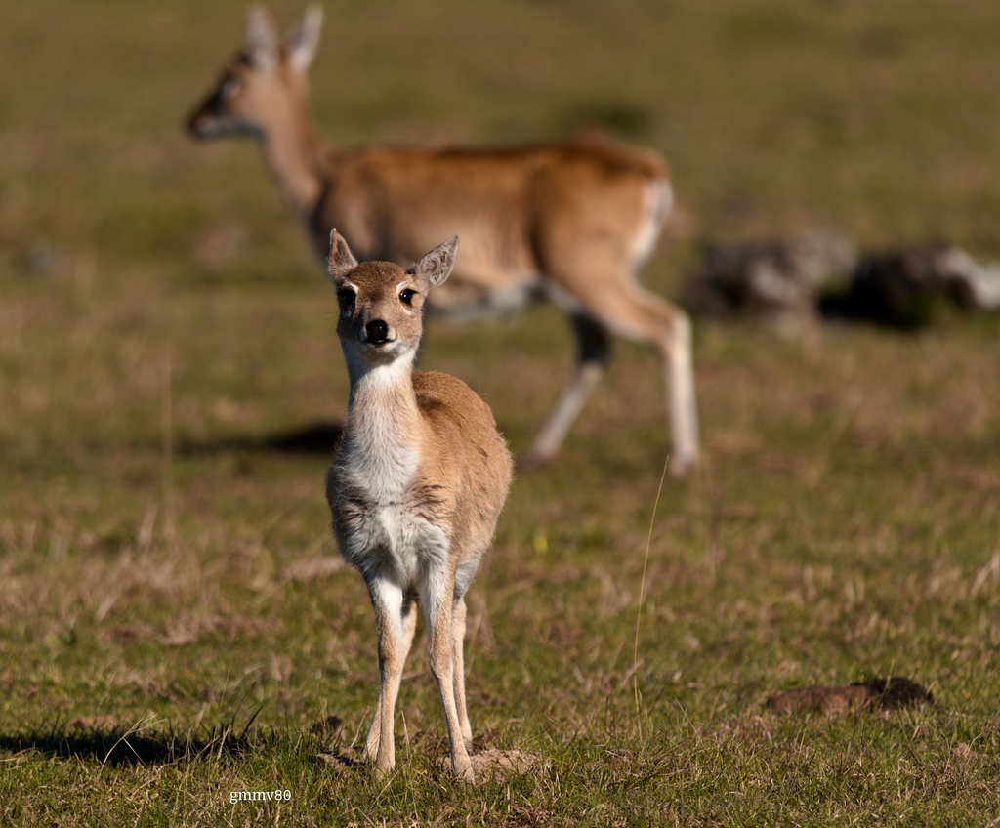

El clima en el Parque Nacional Campos del Tuyu, en Buenos Aires, es templado y costero, con cuatro estaciones bien definidas. En verano (diciembre a febrero), las temperaturas pueden alcanzar los 30 °C, con lluvias frecuentes. El otoño (marzo a mayo) es más seco y fresco, con temperaturas entre 15 °C y 25 °C, ideal para actividades al aire libre. El invierno (junio a agosto) trae temperaturas más frescas, que pueden bajar a 5 °C, y es un período seco. En primavera (septiembre a noviembre), las temperaturas aumentan y la flora florece, con un rango de 10 °C a 25 °C. Es recomendable consultar pronósticos antes de visitar, ya que el clima puede variar. En general, el parque ofrece condiciones favorables para disfrutar de la naturaleza durante todo el año.
Entre los animales más destacados se encuentran varias especies de aves, como el flamenco, el gaviotín y el hornero, que prosperan en las praderas y humedales del parque. Además, es hogar de mamíferos como el ciervo de los pantanos y el zorro, así como de reptiles y anfibios que encuentran en los cuerpos de agua un hábitat ideal. La fauna del parque es fundamental para el equilibrio ecológico, ya que contribuye a la polinización, el control de plagas y la dispersión de semillas. La conservación de estos animales es vital para mantener la biodiversidad y la salud del ecosistema, así como para el desarrollo de prácticas de ecoturismo y educación ambiental en la región. En resumen, la fauna del Parque Nacional Campos del Tuyú no solo enriquece su paisaje, sino que también juega un papel crucial en la sostenibilidad del entorno natural.
La flora del parque se caracteriza principalmente por gramíneas y pastizales, esenciales para el equilibrio ecológico y como hábitat de numerosas especies de fauna. Destacan plantas nativas como el timbó (Enterolobium contortisiliquum) y arbustos adaptados al clima pampeano. En los humedales, crecen juncos y totoras, que son vitales para el ecosistema al ofrecer refugio y alimento a aves y otros animales acuáticos. La conservación de esta flora es crucial para la biodiversidad, ya que las plantas regulan el ciclo del agua y mantienen la salud del suelo. Además, son importantes para las comunidades locales, que las utilizan con fines medicinales y culturales. El parque también promueve la investigación científica y la educación ambiental, subrayando la necesidad de proteger estos valiosos ecosistemas en Argentina.